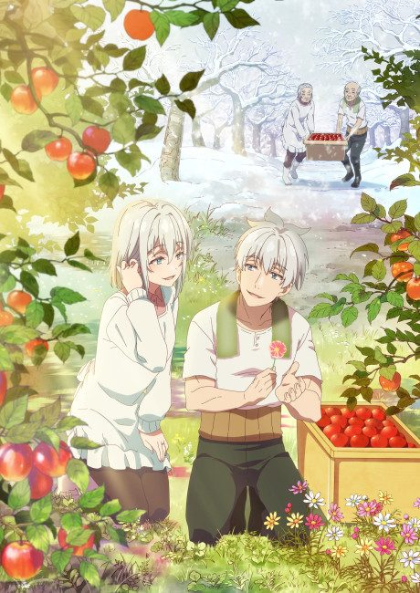
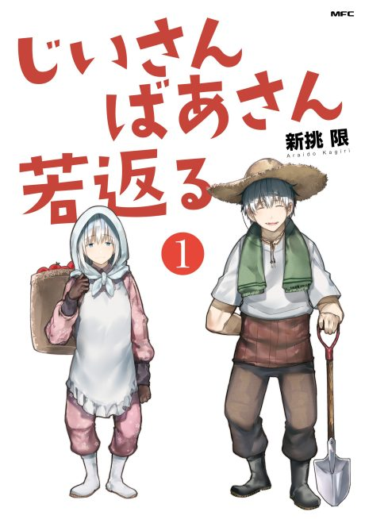

Grandpa and Grandma Turn Young Again
じいさんばあさん若返る
We haven't found where the anime ends in the manga yet.
7.1AniList score
—Animeter, no votes yet
11episodes
Rate it or report where you stopped
Anime finished. Where does the manga pick up?
StatusNo source yet
We looked for where the anime ends in the manga but found no source we trust yet. The manga is 227 chapters, finished.